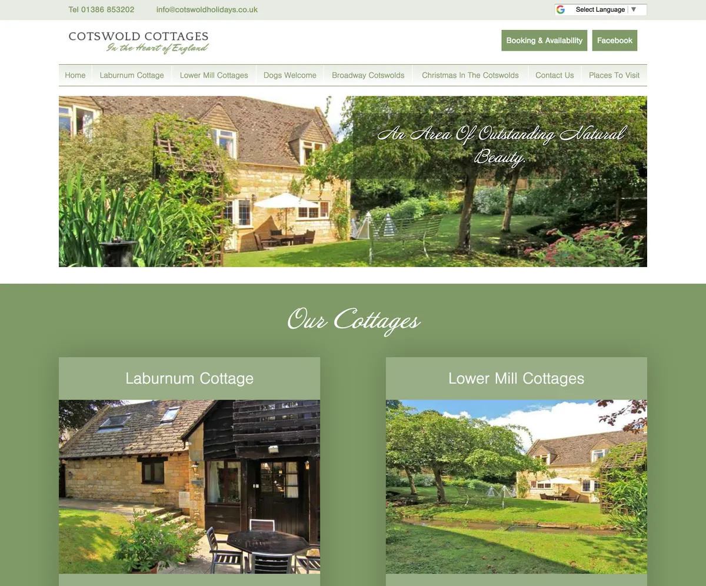
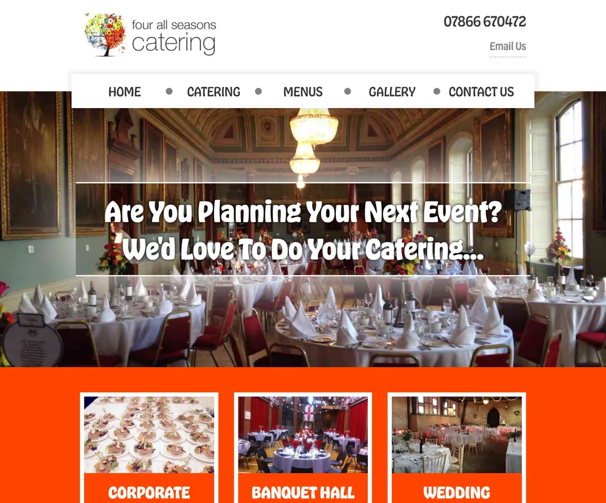
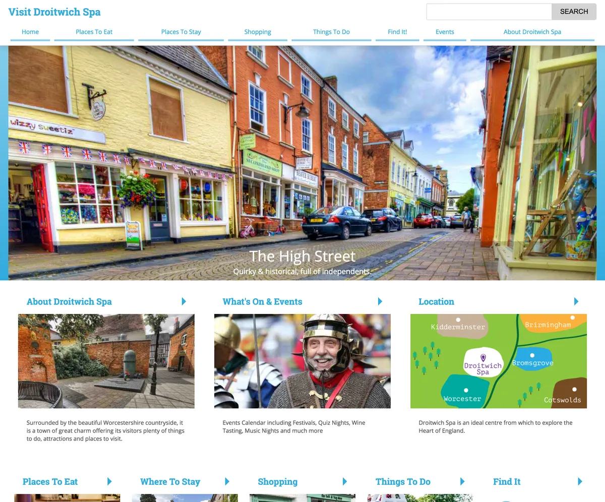

Hospitality
Alcott Farm Bed & Breakfast
A small website for a bed & breakfast in Worcestershire, UK.
View portfolio recordSoftware Engineer: loving Wagtail CMSI’m Nick Moreton, a software engineer in the support team at Torchbox, where we use AI to develop tools for day-to-day client site management. Explore my past website projects, open-source packages, and technical articles.
A selection of websites I’ve worked on in the past, featured on Made with Wagtail.
A small website for a bed & breakfast in Worcestershire, UK.
View portfolio record
A collection of self catering cottage accommodation in the Cotswolds UK
View portfolio record

A website to showcase the area of Droitwich, UK with a focus on tourism. Built for the local council.
View portfolio recordProject screenshots and records from Made with Wagtail ↗.
Explore the tools, read the docs, make them your own.
Wagtail Exposapi is a Wagtail plugin that provides a JSON API for your Wagtail sites internals.
Helps to reduce form spam by tricking bots into submitting data in fields that should remain empty.
An alternative Wagtail richtext filter that can be configured in your apps settings.
Create a page in Wagtail CMS that has a corresponding QR Code.
Wagtail, Python, and the details in between.
Visit the article archiveNo matching articles. Try “Wagtail”, “Python”, or “deployment”.
I work as a software engineer in the support team at Torchbox ↗.
We use AI to develop tools that help us with day-to-day client site management, including upgrades, bug reports, and site outages and incidents.
Preferred CMS: Wagtail ↗
Explore my codeExplore my technical articles and open-source packages.